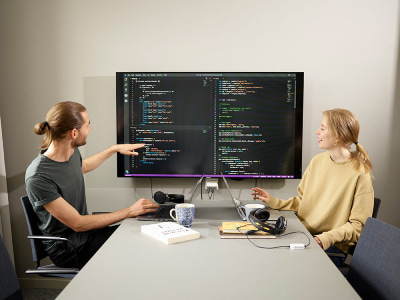

Utbildningen riktar sig till dig som har ett intresse för datorer och teknik. Efter studierna kan du arbeta med utveckling, administration och drift av moderna webbplatser. Utbildningen fokuserar på teoretiska och praktiska färdigheter och har stor tyngdpunkt på webbutveckling med moderna hjälpmedel och språk.
Webbutveckling är en het bransch som fortsätter att växa. Med Mittuniversitetets utbildning Webbutveckling i bagaget har du på bara två år lagt grunden för en framgångsrik framtid. Sök idag!
Branschen bedöms växa med 20 procent närmsta åren och behovet av webbutvecklare är stort.
E-handeln i Sverige växer som aldrig förr och framtidstron är stark bland både e-handelsföretagen och dess konsumenter. Framgångsrika webbplatser skapas genom att användaren sätts i centrum i utvecklingsprocessen. Det är viktigt att ta hänsyn till hur gränssnittet mellan användaren av en e-tjänst och tekniken som får den att fungera ska utformas.
Under utbildningen får du lära dig viktiga delar inom webbanvändbarhet som stöd till den gedigna teknikkunskap du får för att utveckla och administrera framtidens webbplatser och funktionalitet. Det kommer att bli allt viktigare inom webbutvecklingen att kunna ta hänsyn till flera olika accesstekniker genom både fasta och mobila bredbandsuppkopplingar. En trend är också att fler kombinerar och integrerar flera olika former av teknik och funktionalitet på webbplatsen.
Utbildningen är skräddarsydd för att ge dig alla verktyg som krävs för att arbeta med webbutveckling. Du kommer på kort tid att lära dig teknikerna bakom de nya trenderna med att skapa webbplatser som har användargenererat innehåll, exempelvis Wikipedia. Du får också lära dig att skapa och konsumera webbtjänster.
Webbutveckling är den perfekta balansen mellan logik och kreativitet
- Marie Francesca Michl
Flera av kurserna i utbildningen är projektkurser där du kommer att ingå i en grupp studenter med skilda kunskaper i modellering och implementering. Dessa projekt lär dig att använda dina egna färdigheter och att kommunicera effektivt med de andra i utvecklingsarbetet, kunskaper som efterfrågas av arbetsgivarna.
Utbildningen ges helt på distans utan planerade sammankomster på campus. Studietakten är på heltid så du måste räkna med att lägga ned minst 40 timmar i veckan på dina studier. Föreläsningarna som du tar del av sker på dagtid, men det finns även möjlighet att se inspelade föreläsningar i efterhand.
Grundläggande behörighet
Högskoleexamen
Examensbenämningen är Högskoleexamen med inriktning mot datateknik som översätts till Higher Education Diploma with specialization in Computer Engineering.
Det är stor efterfrågan på webbutvecklare och webbdesigners. Branschen bedöms växa med 20 procent de kommande åren och den ökande e-handeln bidrar kraftigt. Behovet av duktiga webbutvecklare är därför stort. Denna utbildning ger dig de kunskaper som marknaden vill ha.